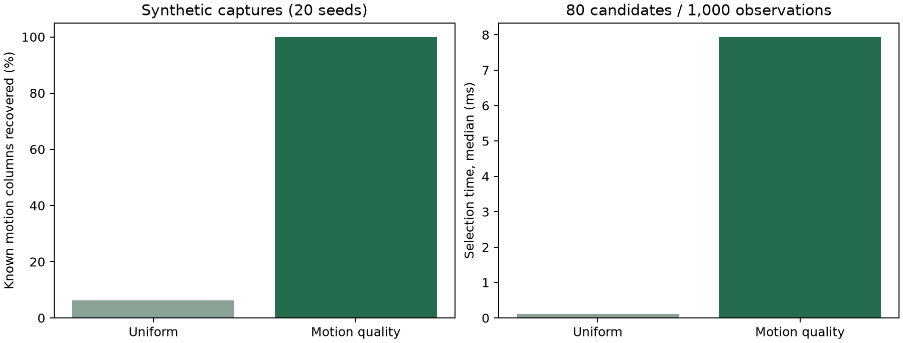

CSI / LOMB–SCARGLE · 2026-11-09飛び飛びの選択から、
信号の変化を見て選ぶ方式へ。
全候補の振幅変化を評価し、外れ値・ノイズ・似た波形を減点して8列を選びます。
8列への絞り込みはPython側で実行します。選択自体の正しさはCircomの証明対象外です。選択したI/QからのLomb–Scargle処理は既存の回路で検証します。
採用した選択方法
- 振幅を各列の中央値で正規化
- 極小振幅・不正な値・外れ値・直線ドリフトを評価
- 不均一な時刻を考慮した残差からノイズを推定
- 変動量とノイズの比率で順位を付け、似た波形も減点
正常BPM帯域はこの選択の基準に含めません。回路へ渡すのは元のI/Qです。
signal = np.maximum(variance - noise, 0)
quality = np.divide(signal, variance, out=np.zeros_like(signal), where=variance > 1e-18)
score = signal * quality * (1 - outliers) ** 2
usable &= (variance > 1e-16) & np.isfinite(score)
score = np.where(usable, score, 0)
合成データ20ケースで比較
80候補の中のランダムな8列に振幅変調を付与。白色ノイズ・静止信号・単発スパイクも混在させています。

既知の変動列の選択割合：等間隔6.25% → 新方式100%。選択処理は中央値約7.94 ms。実環境での認識率を示す値ではありません。
実CSIから証明生成・検証まで確認
4,004候補列・150観測から8列を選択。Groth16証明を生成し、検証成功を確認しました。今回の判定はisNormal=falseです。
回路は807,453制約のまま。実CSIの正解ラベルがないため、実環境での精度改善は未確認です。
変更概要 ／ 選択式・証明範囲・操作手順 ／ 測定JSON ／ 実証明